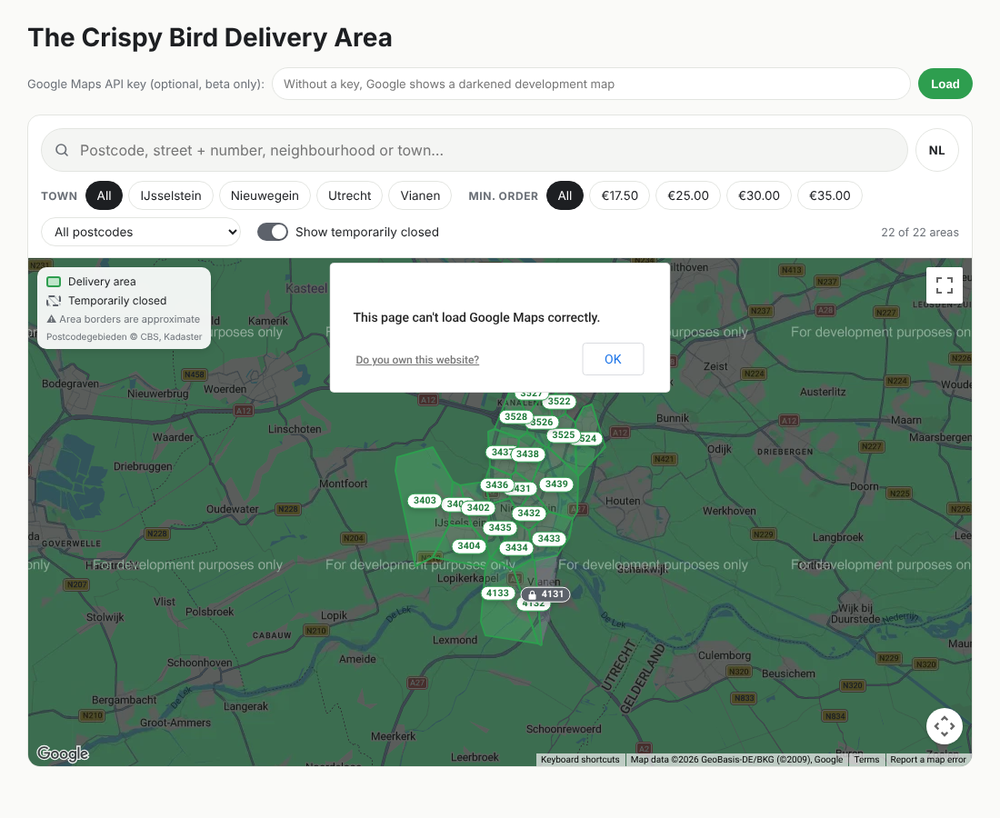
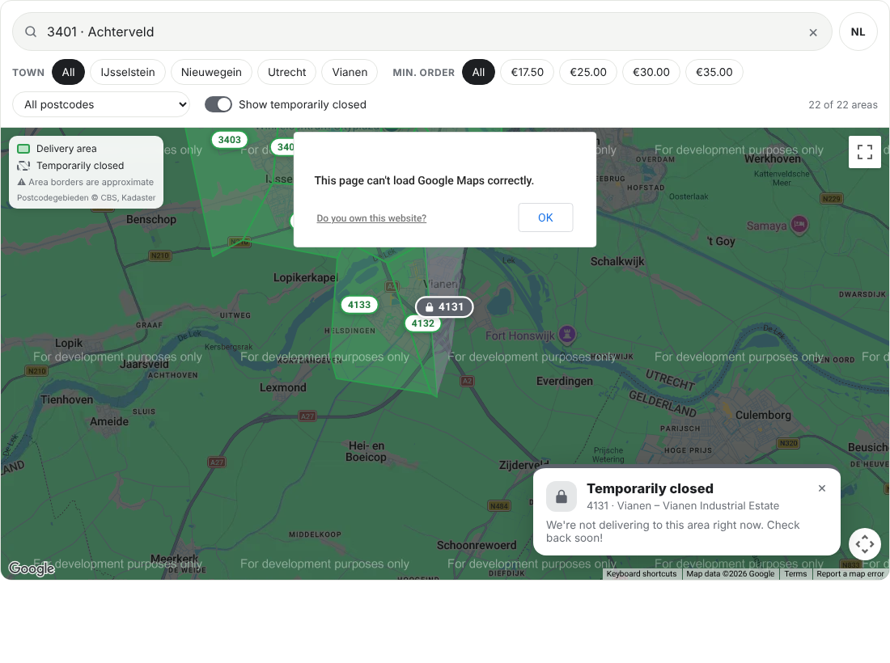
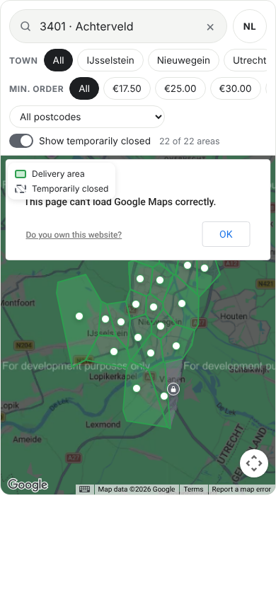

This replaces the delivery-area table on your information page with a map. Customers type their postcode or address and see straight away whether you deliver there, what the minimum order is, and an Order now button.
1-prototype/prototype.html from the package. There is nothing to install.3432, and press Enter. Click the grey 🔒 4131 area to see how a temporarily closed area looks.


3401 or 3401 AB 12), street and house number, neighbourhood or town.| What | Why | Who |
|---|---|---|
| Google Maps key | Without it the map is dark and watermarked. | You, about 15 minutes (step 3) |
| Exact area borders | The borders in this version are approximate; the map says so in its legend. The official postcode borders (CBS/Kadaster, free) can be downloaded with one command, npm run boundaries, in the source code folder. Optionally, Google's own postcode outlines can be switched on (see the section on Google's own outlines in step 3). | Your web developer, about 10 minutes |
| Address search check | The street and house-number search uses PDOK, the free Dutch government address service. It could not be tested while this was built. Postcode search works without it. Test a few addresses once the map is online. | You, 2 minutes |
The map uses Google Maps. Google needs a "key" to know whose map it is. A key is free to create; Google asks for a payment card, but small websites normally stay within the free monthly allowance (see step 8).
https://bestellen.thecrispybird.nl/* and the address where the map files are hosted (step 4).Google can draw its own postcode outlines on the map, exactly as on Google Maps. The map switches to them automatically when this is set up, and falls back to the bundled borders if it isn't. Whether Google offers postcode outlines for the Netherlands could not be confirmed while this was built, so check Google's boundary coverage list first.
npm run place-ids so visitors don't need to.map-id="…".When Google draws the outlines, the closed area shows as grey without the striped pattern, and the 🔒 badge stays.
The four files in 2-website-files need a web address. Choose one option:
2-website-files folder onto the page.https://crispy-map-123.netlify.app. You can rename it under Site settings. Add this address to your Google key's allowed websites (step 3).https://YOUR-ADDRESS/embed.html?key=YOUR_KEY.If you already have hosting, for example for a main website, upload the folder there, e.g. to https://thecrispybird.nl/delivery-map/. Cloudflare Pages and GitHub Pages are other free options.
Your ordering site (bestellen.thecrispybird.nl) is run by an ordering platform. Ask the platform's support team: "Can I add custom HTML, a script, or an iframe to my Information page?" Then use the matching option. Replace the capital-letter parts with your own values.
<crispy-delivery-map google-maps-key="YOUR_GOOGLE_MAPS_KEY" lang="nl" order-url="https://bestellen.thecrispybird.nl/"> </crispy-delivery-map> <script src="https://YOUR-ADDRESS/crispy-delivery-map.js"></script>
<iframe src="https://YOUR-ADDRESS/embed.html?key=YOUR_GOOGLE_MAPS_KEY&lang=nl" style="width:100%;height:760px;border:0" loading="lazy" title="Bezorggebied"></iframe>
Put a link or button on the information page, e.g. "Check if we deliver to you", pointing to https://YOUR-ADDRESS/embed.html?key=YOUR_KEY&lang=nl. The map then opens as its own page.
#c8902a, taken from the ordering site) for buttons and filters, and the site's Montserrat font. Delivery areas stay green, and grass and parks are shown in a darker green. To change a colour, a developer can add, for example, crispy-delivery-map { --cdm-accent: #c8902a; --cdm-grass: #2f6b3a; } to the site's CSS. If a Google Map ID is used, set the grass colour in the Map ID's style in Google Cloud instead.The list of areas is a simple spreadsheet. With a Google Sheet, you or your staff can close or reopen an area in seconds, without touching the website.
3-area-list/delivery-areas.csv.status to locked (or gesloten). To reopen it, change it to open. Minimum order and delivery cost can be edited too, e.g. 17,50.areas-csv="THE_LINK" for the script version, or &sheet=THE_LINK at the end of the iframe address.Changes appear on the map within about 5 minutes; Google refreshes published sheets with a short delay. A new postcode also needs its border added, which is a quick job for a developer (npm run boundaries).
The map reports what customers do, without sending any addresses or personal data. If your site uses Google Analytics 4 or Google Tag Manager, these events arrive there automatically:
| Event | When | Details sent |
|---|---|---|
delivery_map_result | A customer gets an answer | result: open / locked / outside, postcode, source: address or area click |
delivery_map_order_click | A customer clicks Order now | postcode |
delivery_map_filter | A customer uses a filter | town, min_order, postcode |
order_click ÷ result where result = open. How many people who can order actually click through.result = outside. Many searches from one direction can justify expanding there.result = locked, per postcode. This shows what a closed area costs you.If the site has no analytics yet, Google Analytics 4 is free. Your developer or ordering platform can add it; the map's events then appear under Reports → Engagement → Events. For postcode-level reports, register postcode and result as custom dimensions in GA4 (Admin → Custom definitions).
Everything this map needs can run for €0 per month at the traffic level of a restaurant website. Prices change, so check the linked pages for current numbers.
| Item | Cost | Notes |
|---|---|---|
| Google Maps (map display) | Free allowance then pay per use | Google gives a free number of map loads each month (around 10,000 for the Maps JavaScript API at the time of writing), then charges per 1,000 loads. Set a budget alert. Pricing |
| Google's own postcode outlines (optional) | Free allowance then pay per use | Uses a Map ID (free) and the Geocoding API (free monthly allowance, then per 1,000 lookups). Storing the postcode IDs once (npm run place-ids) keeps this close to zero. |
| Address search (PDOK) | Free | Dutch government service, no account needed. |
| Official postcode borders (CBS/Kadaster) | Free | Open data (CC BY 4.0). The credit "© CBS, Kadaster" is already shown on the map. |
| Google Sheet for areas | Free | Any Google account. |
| Hosting (Netlify / Cloudflare Pages / GitHub Pages) | Free tier | The free tiers are far more than this map needs. Paid plans only matter for team features or very high traffic. |
| Google Analytics 4 | Free | For the KPIs in step 7. |
| START-HERE.html | This guide |
| 1-prototype/prototype.html | Self-contained demo; double-click to open |
| 2-website-files/ | The four files to put online (step 4) |
| 3-area-list/delivery-areas.csv | The area list, ready to import into Google Sheets (step 6) |
| screenshots/ | Preview images (taken without a Google key, hence the dark map) |
| 5-source-code/ | For a web developer: full source and build scripts, with technical notes in its README.md |
| Setting | What it does |
|---|---|
google-maps-key | Your Google Maps key (required) |
lang | nl or en. The starting language; customers can still switch. |
areas-csv | Link to the published Google Sheet (step 6) |
order-url | Where the Order now button goes |
map-id | Optional Google Map ID (Google's own postcode outlines and custom styling) |